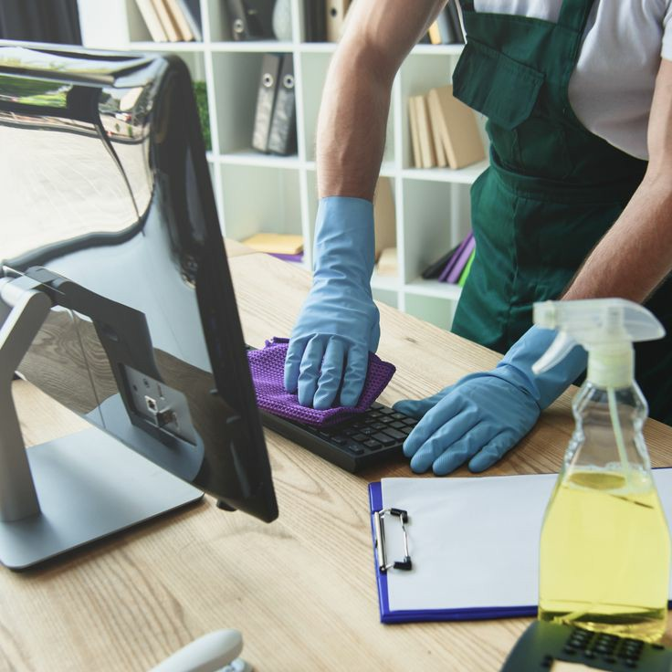

In the fast-paced world of business, the cleanliness of a commercial space is more than just a matter of aesthetics; it directly impacts productivity, employee well-being, and customer perceptions. Commercial cleaning services are essential for maintaining a professional environment that promotes health, safety, and efficiency. Here’s
a deeper look into why investing in professional commercial cleaning is crucial for any business.
Why Commercial Cleaning Matters
Health and Safety
One of the primary reasons for regular commercial cleaning is to ensure a healthy and safe environment. Workplaces can harbor a range of contaminants including bacteria, viruses, and allergens that can lead to illness and discomfort among employees. Regular cleaning and sanitization of surfaces, especially high-touch areas
like doorknobs, elevator buttons, and shared equipment, help reduce the spread of germs and minimize the risk of infection.-
Employee Productivity
A clean workspace contributes significantly to employee productivity. Clutter and mess can be distracting and lead to decreased efficiency. On the other hand, a well-maintained environment fosters a positive atmosphere, reduces stress, and can even enhance
focus and motivation. Regular cleaning ensures that the workspace remains organized and conducive to high performance.
Professional Image
First impressions matter. For businesses that frequently host clients, partners, or potential customers, a clean and well-maintained environment speaks volumes about the company’s values and attention
to detail. A spotless office, retail store, or lobby can reinforce a positive image and help build trust and credibility with visitors.-
Compliance and Regulation
Many industries are subject to health and safety regulations that require stringent cleanliness standards. For example, healthcare facilities, food service establishments, and manufacturing plants often have specific cleaning protocols to comply with legal and health standards.
Professional commercial cleaning services are well-versed in these requirements and can ensure that your business remains compliant.
← back